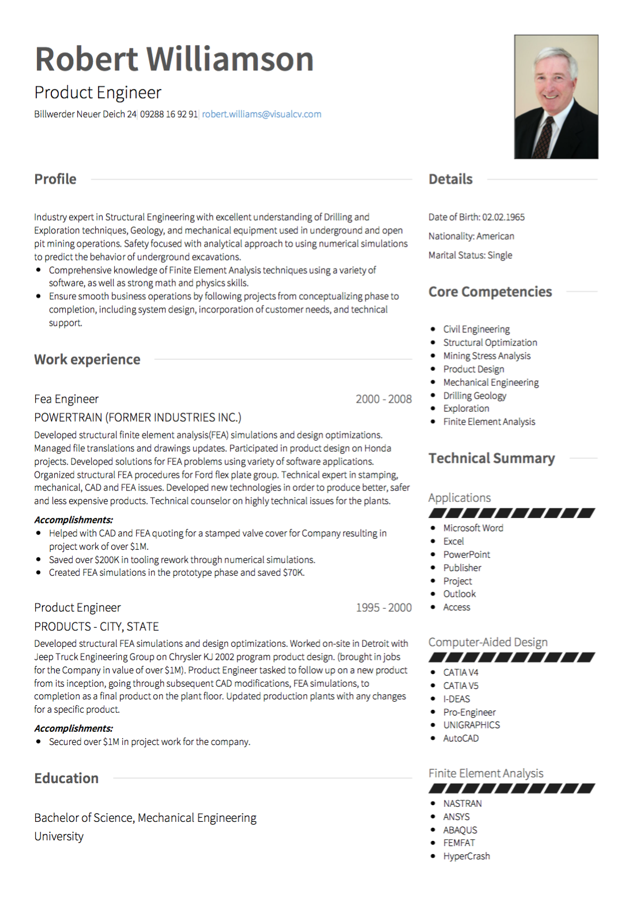

Exigences CV allemandes
L'Allemagne a une culture de travail très spécifique et un ensemble d'attentes CV qui doivent être observées lors de l'écriture de votre CV. Ce guide présentera certaines lignes directrices pour l'écriture de votre CV, mais si possible, avoir
un look local allemand sur votre CV est un excellent moyen d'obtenir des commentaires sur votre CV allemand et de vous assurer qu'il répond à toutes les exigences.

CV Conseils et règles:
Longueur: Un CV allemand ne doit pas dépasser deux pages .
Terminologie: en Allemagne , un CV s'appelle Lebenslauf. Format, commande et mise en page du CV:
Photo: Assurez-vous d'inclure une photo sur votre CV allemand . Les recruteurs et les employeurs allemands apprécient le professionnalisme, alors
assurez-vous que votre photo est de haute qualité et convient.
Renseignements personnels: Près du haut de votre CV, incluez votre nom, votre adresse, votre numéro de téléphone , votre adresse électronique et votre date de naissance. Selon Just Landed , «Vous devez indiquer votre âge ou votre CV sera considéré comme incomplet.» Vous pouvez également inclure votre lieu de naissance, votre état matrimonial et votre nombre d'enfants (le cas échéant). Pour les non-allemands, cela peut sembler
beaucoup d'informations, mais en Allemagne, l'inclure dans votre CV est commun.
Résumé personnel : appelé Profil, une section récapitulative peut être incluse dans votre CV allemand. Cette section devrait décrire
brièvement vos compétences, votre expérience et vos titres de compétences. Ce n'est pas une section détaillée, mais sert à présenter le reste du CV.
Éducation: l' éducation devrait être écrite dans un ordre chronologique inverse, allant jusqu'à l'école secondaire. Chaque inscription devrait inclure le nom de l'établissement et le domaine d'étude.
Expérience de travail: Affichez votre historique de travail dans un ordre chronologique inverse. Inclure les dates et l'emplacement de chaque
poste, et être clair sur l'industrie et le poste spécifique que vous déteniez. Utilisez une langue forte et active, et utilisez des balises pour rendre vos différentes réalisations faciles à lire et à différencier. Compte tenu des lacunes
dans l'emploi.
Autres sections de CV:
Compétences : Bien qu'il ne soit pas obligatoire, il est illustratif d'inclure une section sur les compétences que les attestations obtenues hors de l'école ou les compétences linguistiques.
Expérience de bénévolat: cette section est facultative , mais si vous pensez que votre section de bénévolat est un atout, c'est une bonne idée.
Références: En Allemagne , il n'est pas commun d'inclure les coordonnées des références dans votre CV. Au lieu de cela, les références écrites sont préférées. Selon Georgia Hädicke à Graduateland , “en Allemagne , les références appartiennent habituellement sous forme écrite (” Arbeitszeugnis “) que chaque salarié a le droit de recevoir d'une entreprise lorsqu'ils finissent leur
travail.
Conclusion:
Les recruteurs et les employeurs allemands apprécient un CV bien organisé et détaillé qui est clair et direct sur vos expériences et vos compétences. S'assurer que vous disposez de la bonne information emballée dans le bon sens peut être la différence
entre un rappel et un résumé jeté.